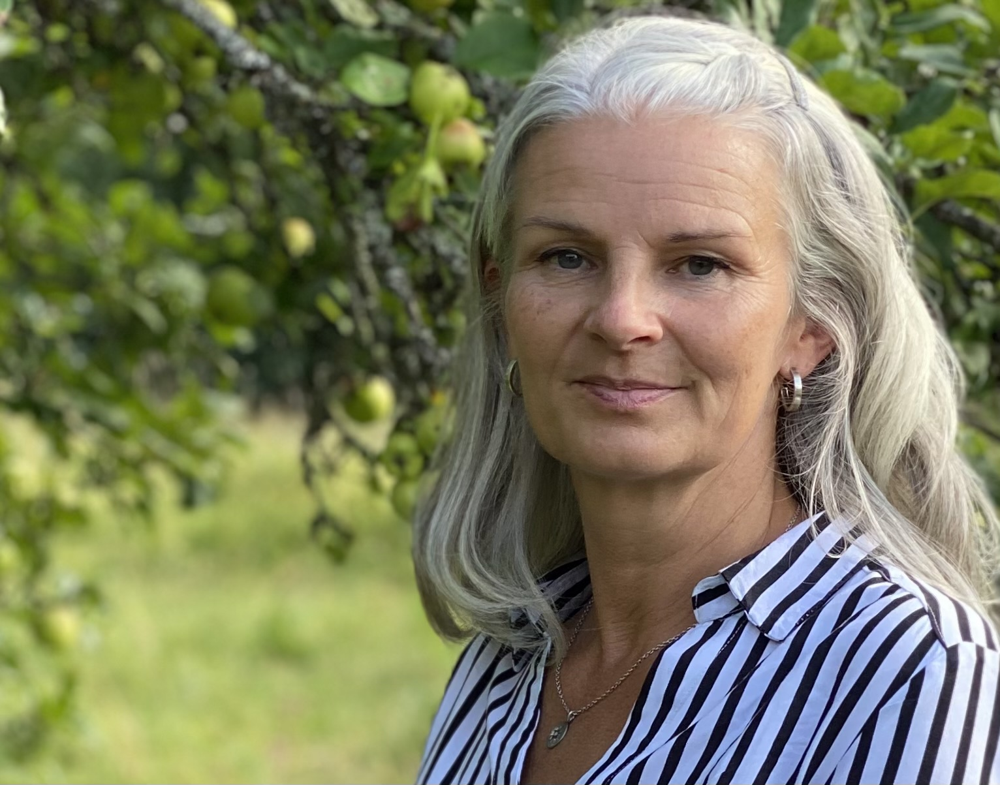

Spirituell terapeut og veileder
Live Sørlie har over ti års erfaring innen spirituell terapi og healing. Hun har dedikert sitt liv til å hjelpe andre med å finne fred, klarhet og retning på deres spirituelle reise.
Hennes unike tilnærming kombinerer tradisjonelle terapiteknikker med spirituell veiledning, og skaper et trygt og nærrende rom for transformasjon og vekst.
Live tror at hver person har den indre visdommen til å hele og blomstre. Gjennom sine konsultasjoner hjelper hun klienter med å utnytte denne visdommen og skape varig positiv endring i livene deres.
Tatt kurs i Mirakler – A Course in Miracles
Utdannet hypnoterapeut
Gir veiledning i meditasjon
Neuro-lingvistisk planlegging
Utdannet Enneagram Master
Indre ro terapi
Reiki healing
Autro transformasjon
Bachelor i støttepedagogikk